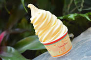

Pineapple Dole Whip

Description
Pineapple Dole Whip like what you'd find at Disneyland or Hawai'i.
Ingredients
- 2 cans (20 oz. each) DOLE crushed pineapple
- 2 tbsp. lemon juice
- 2 tbsp. lime juice
- 1/3 cup sugar
- 1.5 cups heavy whipping cream, whipped
Steps
- Drain pineapple: reserve 2 tbsp. juice. Set aside.
- Place pineapple, lemon juice, lime juice, sugar and reserved pineapple juice in blender.
Cover and blend until smooth.
- Power into two 1-quart freezer zipped bags. Store bags flat in freezer. Freeze 1.5
hours or until slushy.
- Stir pineapple slish gently into whipped cream until slightly blended in large bowl.
- Return to freezer until completely frozen, about 1 hour and serve.